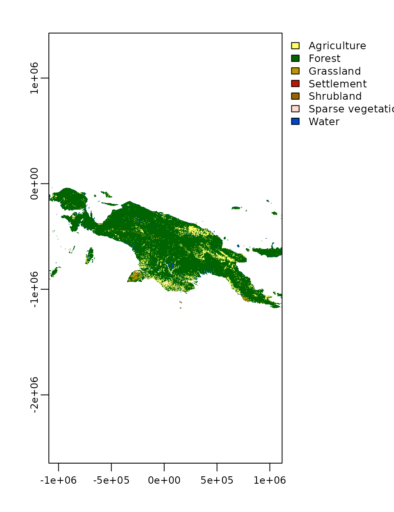
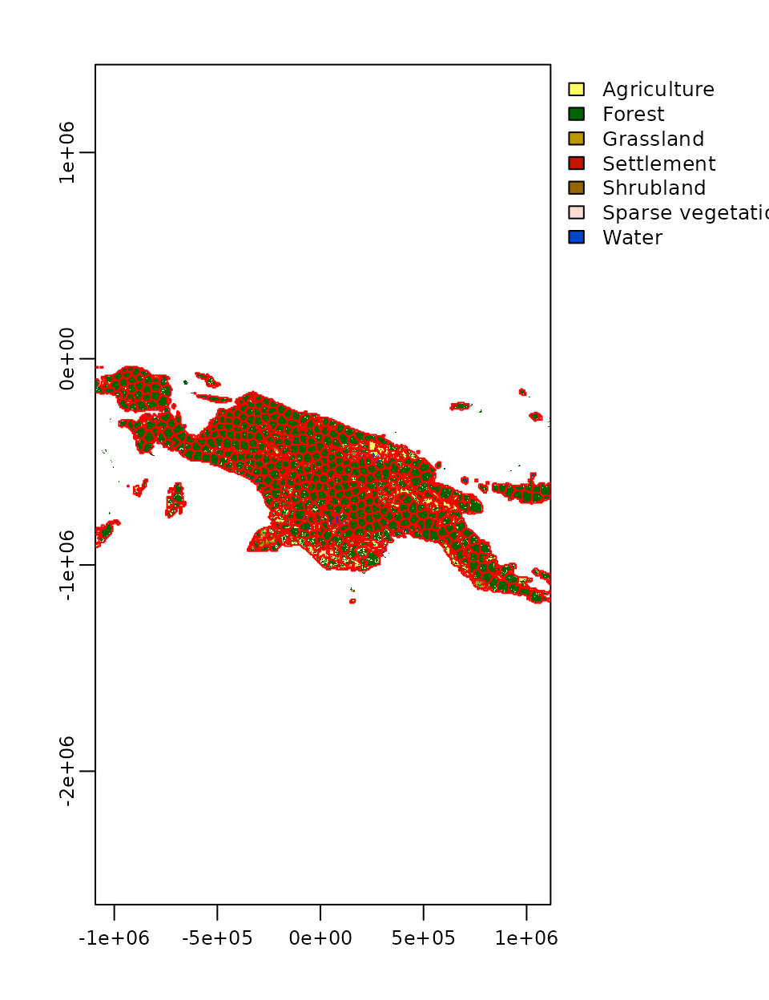

vignettes/articles/motifels.Rmd
motifels.Rmd
library(supercells)
library(motif)
library(terra)
#> terra version 1.4.20
library(sf)
#> Linking to GEOS 3.9.1, GDAL 3.3.2, PROJ 7.2.1
landcover = rast(system.file("raster/landcover2015.tif", package = "motif"))
plot(landcover)
cove_output = lsp_signature(landcover, type = "cove", window = 20,
normalization = "pdf", ordered = FALSE)
cove_output = lsp_restructure(cove_output)
cove_output = lsp_add_terra(cove_output)
cove_output
#> class : SpatRaster
#> dimensions : 191, 368, 30 (nrow, ncol, nlyr)
#> resolution : 6000, 6000 (x, y)
#> extent : -1091676, 1116324, -1184556, -38556.49 (xmin, xmax, ymin, ymax)
#> coord. ref. : +proj=cea +lat_ts=5.5 +lon_0=140.8 +x_0=0 +y_0=0 +ellps=WGS84 +units=m +no_defs
#> source : memory
#> names : id, na_prop, X1, X2, X3, X4, ...
#> min values : 1, 0, 0, 0, 0, 0, ...
#> max values : 7.028800e+04, 9.000000e-01, 1.000000e+00, 3.281250e-01, 1.000000e+00, 5.000000e-02, ...
cove_output2 = subset(cove_output, 3:30)
slic = supercells(cove_output2, k = 2000, compactness = 0.1, dist_fun = "jsd")
plot(landcover, reset = FALSE)
plot(st_geometry(slic), add = TRUE, border = "red")